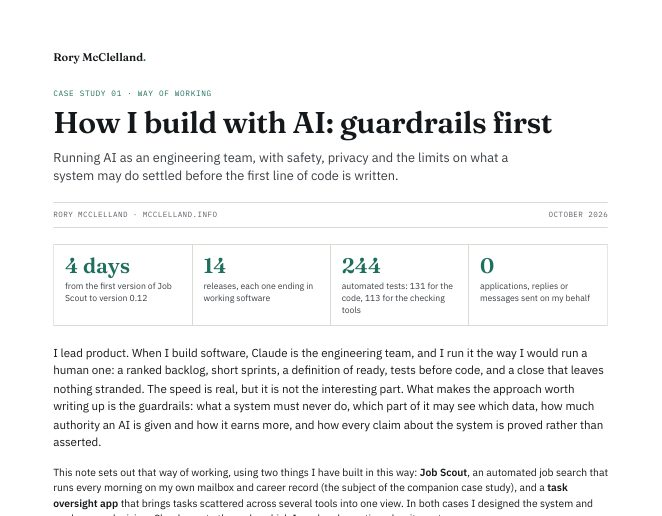
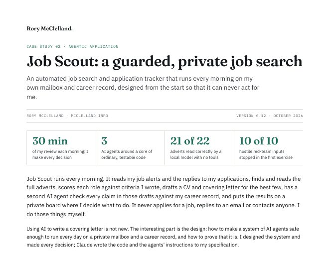

Twenty years in product, most recently spent on how AI agents can be built safely into the way companies operate: what is worth automating, how it is tested against real data, and which safeguards let it run unattended.
From mapping the work to running it unattended: five stages, four levels of autonomy and a plain test for risk, with worked examples by industry.
See the method → WorkTools designed and built with AI coding tools, two of them written up in full as case studies you can download.
See the work → WritingShort pieces on privacy and safety in product, on how AI systems are built, and on what it takes for an organisation to adopt AI well.
Read the writing →Why “I want privacy” is not yet a requirement, and the two questions that turn it into one.
Building with AIBefore deciding what an AI system should do, I write down what it must never do. Then each line is made true in code.
AI in organisationsThe most valuable thing an AI programme can leave behind is a way of thinking the organisation can run for itself.

Running AI as an engineering team, and the seven guardrail principles applied to anything that uses it.

One system followed from design to daily use, with the never list, data boundaries and red team results, and a public demo.
The best way to get in touch is by email. I'm always happy to talk through a specific workflow, a rollout that's stalled somewhere along the way, or a question a security team has been asked with no deadline attached to it.
I read and reply to email myself, usually within a day.